TOD360 Features.
The TOD 2.0 video experience. A premium, interactive player across every screen — VOD for series and film, a live sport player built for the moment, and the TOD360 layer that turns watching into taking part.
Watching becomes taking part.
TOD360 is the next-generation player experience for TOD by beIN — designed to keep viewers immersed, in control, and connected. One design language across VOD and live sport, tuned per device, secured end to end.
Content stays the hero
Streamlined, intuitive controls that fade to keep viewers inside the content — smooth navigation on a film or a 90-minute match alike.
Engage in real time
The TOD360 layer adds timelines, stats, highlights, polls, and watch parties — a deeper connection with the game and with other fans.
Premium, protected
DRM, watermarking, geo-fencing, and entitlement checks protect premium rights without getting in the viewer's way.
Every screen. Two phases.
The experience spans Web, Mobile, TV, WebTV, and Huawei. Features roll out in two phases — Phase 1 at launch, Phase 2 as the experience deepens.
| Capability area | Highlights | Phase |
|---|---|---|
| VOD Player | 4K, seek preview, multi-audio & subtitle, offline download, continue watching, PiP, skip intro | PHASE 1 |
| Live / Sport | Go Live, channel switching, smart highlights, 4K, multi-audio, end-of-play for live | PHASE 1 |
| Interactive Timeline (OPTA) | Key-moment markers, live commentary, match & player stats | PHASE 1 |
| Fan Engagement | Polls, trivia, predictions, watch party, chat, cheer meter | PHASE 1 |
| Multi-View & Multi-Angle | Multiple matches / angles on one screen, seamless switching | PHASE 1 |
| TOD One Play | All language & quality feeds in one place, saved preferences | PHASE 2 |
| Real-Time Alerts | Cross-match key-event alerts with instant jump-to-action | PHASE 2 |
| HDR + Dolby · 50 FPS | High-frame-rate, high-dynamic-range premium playback | PHASE 2 |
The VOD player.
Streamlined controls. Effortless binge.
Built to enhance the overall viewing experience with seamless playback and a customisable, intuitive interface that keeps viewers immersed episode after episode.
Core controls
Play / pause, rewind & forward, seek bar, volume, duration & progress, full screen, back.
Up to 4K
4K VOD support, quality & playback-speed switch, seek preview, and PiP for true multitasking.
Multi-audio & subtitles
Multiple audio languages, multi-subtitle (SRT) and CC support — bilingual by design (Book 03).
Pick up anywhere
Continue watching, skip intro, next & more episodes, offline download, screen lock, age/content rating on player.
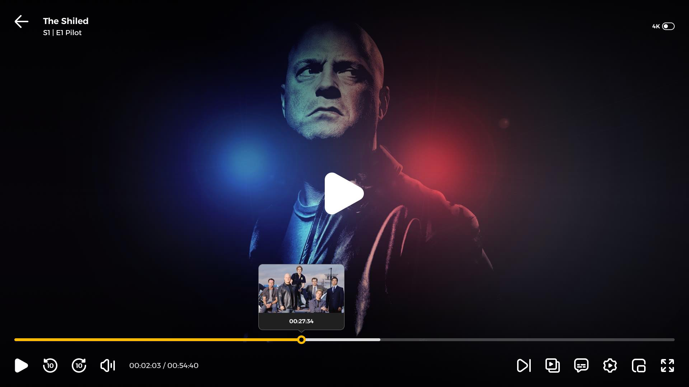
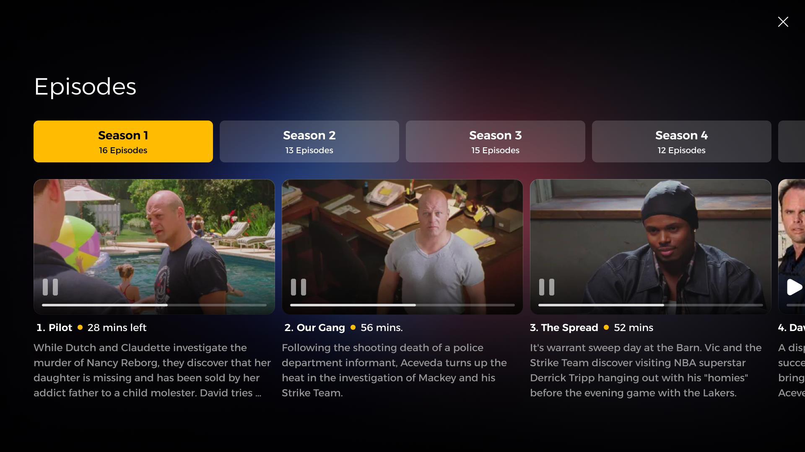
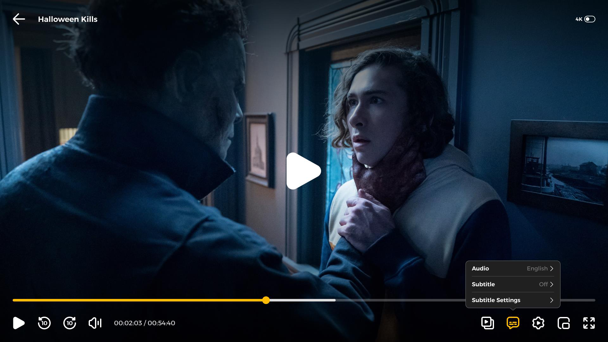
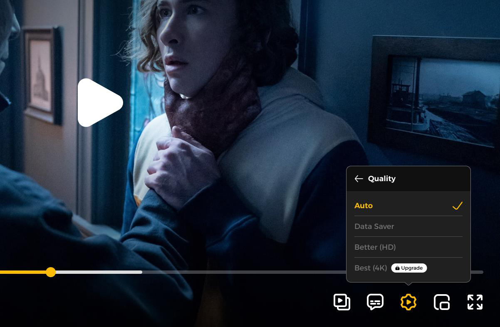
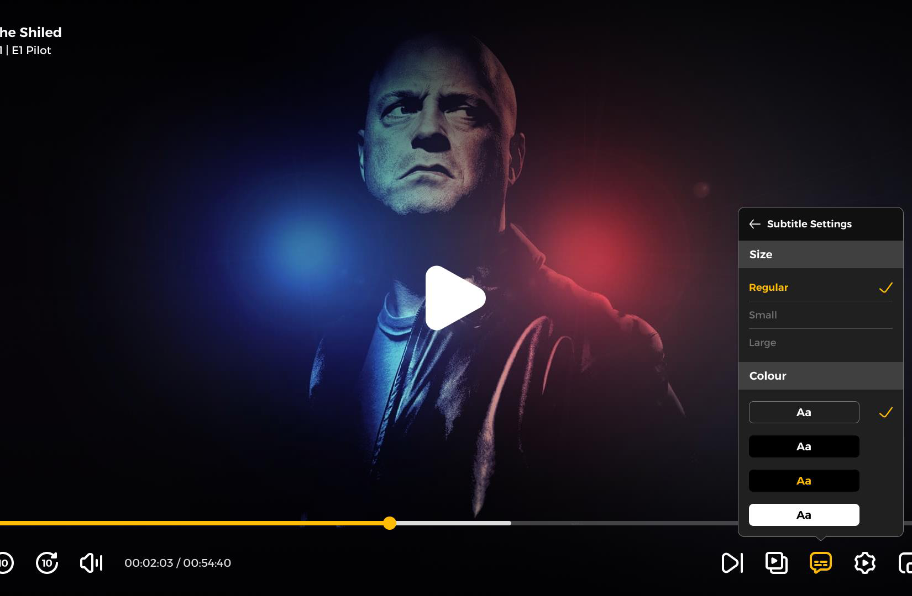
The story never stops.
As one title ends, an engaging Watch-Next screen keeps the journey going — surfacing the next episode or a smart recommendation before the viewer ever leaves.
Auto next episode
Next-episode and watch-credit handling keeps binge sessions seamless, with a clear, branded end card.
Smart suggestions
Personalised recommendations surface the next thing to watch, tuned to the viewer's taste.
Moments that pop
Signature in-player moments and the end-of-play experience reinforce the TOD by beIN brand at every hand-off.
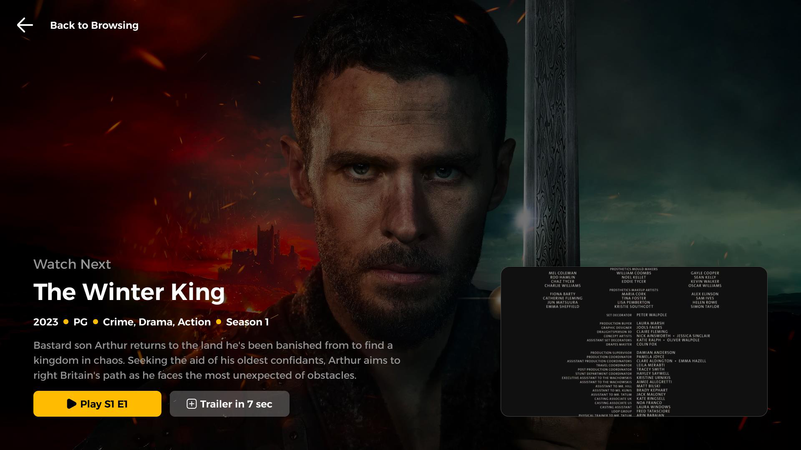
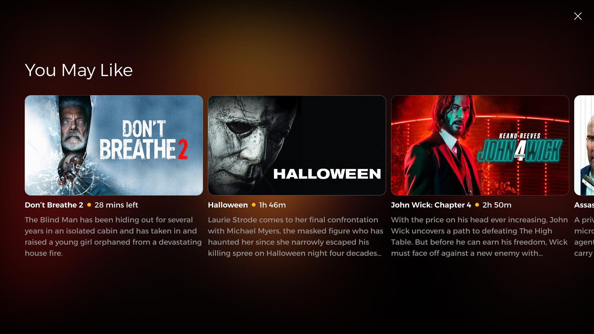
The sport player.
At the heart of the action.
A user-friendly interface keeps viewers focused on the live game — smooth, uninterrupted, and built for the moment. Instantly switch between live channels without missing a beat, with spoil-free updates for matches in progress.
Go Live & switch
Go-LIVE button, channel / event switching, volume, 4K quality switch, PiP, full screen.
Jump to the action
Real-time event markers let users jump straight to goals, substitutions, and highlights.
Multi-language feeds
Multiple audio & commentary languages and quality options, per market.
Catch up safely
Spoil-free updates for ongoing matches so late joiners stay in suspense.
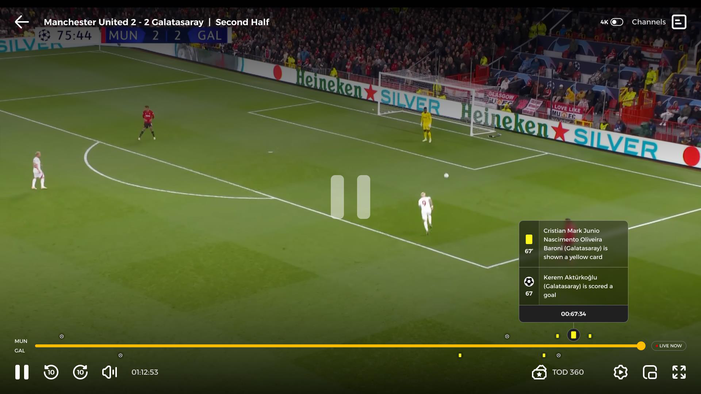
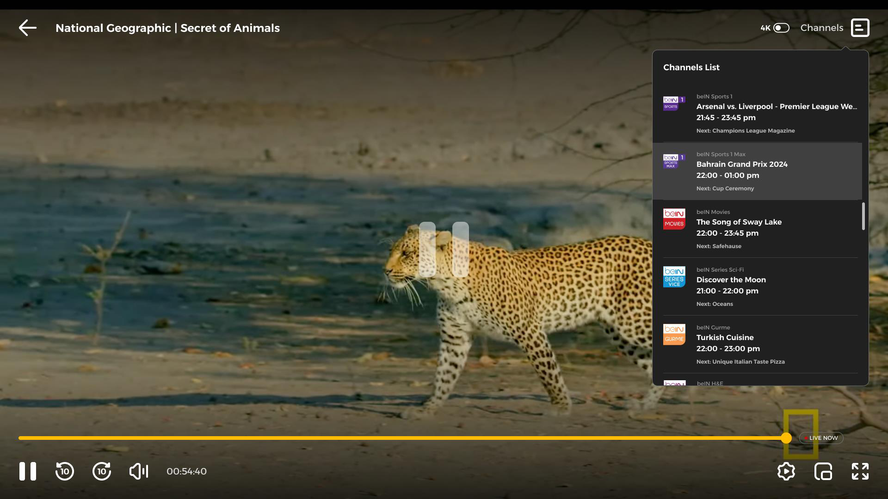
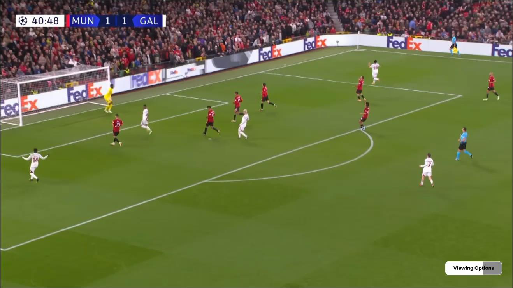
Every key moment, on a dynamic timeline.
Powered by OPTA data, the interactive timeline marks key moments — goals, tries, penalties, turnovers — and lets viewers move through the match while it happens.
Key moments, live
A dynamic timeline keeps you in the action, with markers for every key event so you never scrub blindly.
Live updates throughout
Play-by-play commentary updates across the full match, right inside the player.
Performance metrics
Tackles, runs, points scored, and player metrics surfaced directly from the player interface.
Relive it instantly
Automatically generated key moments let fans relive the best plays the instant they happen.
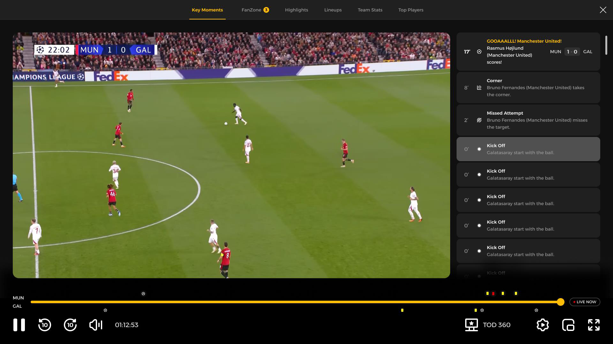
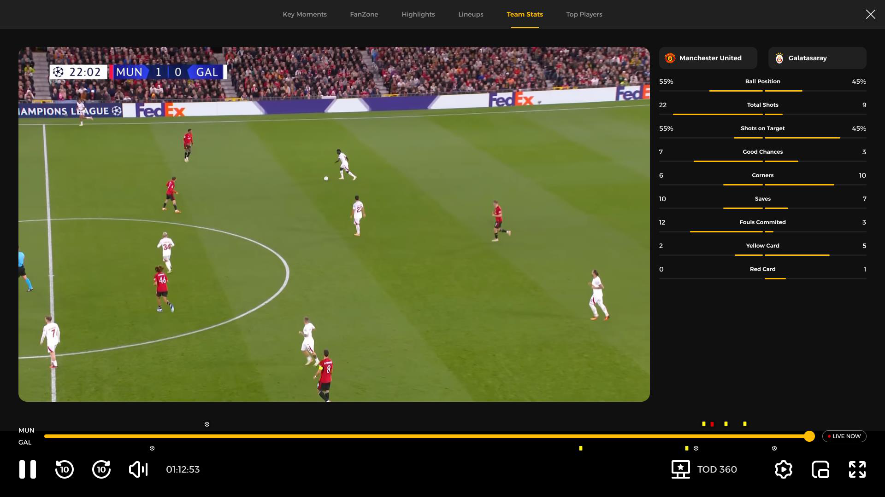
Watch together. Play along.
Fan Mode turns a stream into a shared event — stats, team and player updates, and interactive widgets that keep the audience excited and connected to friends and other fans in real time.
Stats & updates
Live stats, player and team updates, and informative widgets that keep fans informed without leaving the match.
Together, apart
Watch parties and live chat connect fans with friends and the wider community in real time.
Play along
Predictions, text & image polls, emoji slider, image quiz, trivia, and a live cheer meter.
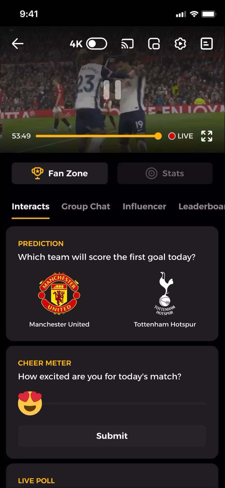
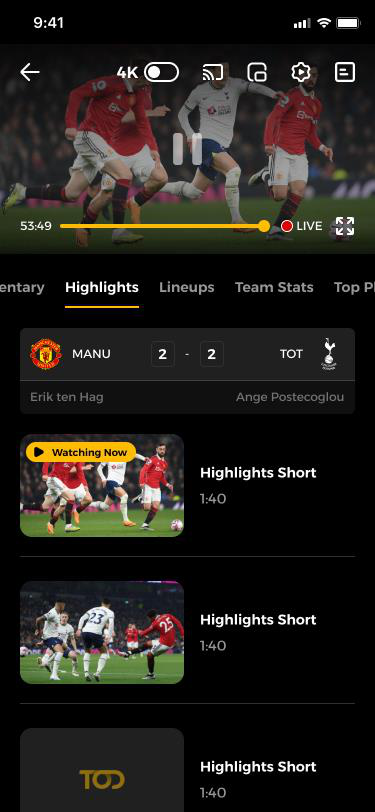
Never miss a moment, anywhere.
For the fan following more than one game, TOD360 brings every feed, angle, and alert into a single, controllable experience.
Many games, one screen
Watch multiple live matches at once with multi-layouts, then switch between views without interrupting playback.
Your point of view
Different angles and feeds of the same event, on a single screen, under the viewer's control.
All feeds in one place
Every language and quality feed in one player — no switching — with saved preferences applied automatically.
Cross-match action
Key-event alerts from other live matches with an instant jump-to-action, for a true multigame experience.
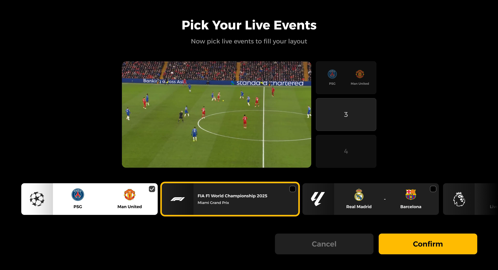
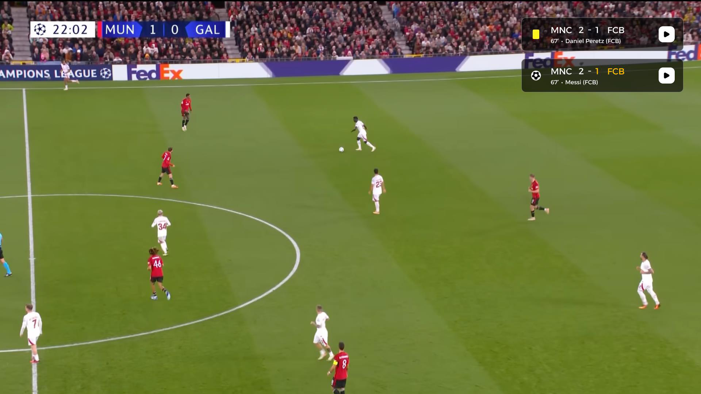
Security & brand.
Premium rights, protected end to end.
Protecting premium sport and stories is non-negotiable. Security runs quietly beneath the experience; analytics keep quality honest.
| Area | Capability |
|---|---|
| Anti-piracy | Geo-fencing, app hardening, and code obfuscation |
| Entitlement | Concurrency & entitlement checks, device management |
| DRM | DRM key rotation, forensic watermarking, secure DRM download |
| Analytics | Conviva video / ECO quality-of-experience monitoring |
Security protects the rights without taxing the viewer. A legitimate user should never feel the DRM — only the seamless, premium experience.
The product is the brand.
TOD360 is where most people meet TOD by beIN. Every control, transition, and sound carries the system from the rest of this library.
Colour, type, components
Player UI uses the locked palette, Alexandria, and components from Book 04 — Navy surfaces, Yellow as the action accent.
TOD ease, ≤300ms
Controls and transitions follow Book 07 motion — fast, purposeful, never decorative. Idents and the sonic sign moments.
Bilingual & clear
Labels, empty states, and end cards follow Book 03 — confident, warm, equal in Arabic & English with correct RTL.
Readable & inclusive
CC/subtitles, contrast, and touch targets meet the accessibility bar in Book 04. The premium experience is for everyone.
Player branding, new in-app features, and any change to the TOD360 experience are coordinated through brand@tod.tv with product (Book 09 governance).
Everything TOD does, on one page.
The complete capability set of the TOD360 experience, grouped by area. Items tagged PHASE 2 are proposed for the next wave; everything else is Phase 1 at launch.
VOD Player
Series & Film · 14- Play / pause
- Rewind & forward
- Seek bar & preview
- Volume & mute
- Up to 4K
- Quality switch
- Playback speed
- Picture-in-picture
- Multi-audio
- Multi-subtitle & CC
- Continue watching
- Skip intro · next episode
- Offline download
- Age / content rating
Live & Sport Player
Built for the moment · 9- Go Live
- Channel & event switching
- Live channel list (EPG)
- Up to 4K
- Multi-language audio
- Spoil-free updates
- Picture-in-picture
- Full screen
- Smart highlights
Interactive Timeline
Powered by OPTA · 7- Key-moment markers
- Real-time commentary
- Match stats
- Player stats
- Team stats
- Lineups
- Top players
Fan Mode & Engagement
Watch together · 12- Fan Zone
- Group chat
- Influencer feed
- Leaderboard
- Predictions
- Text poll
- Image poll
- Emoji slider
- Image quiz
- Trivia
- Cheer meter
- Watch party
Multi-View & Angles
Many games, one screen · 6- Multi-view layouts
- Pick your live events
- Multi-angle
- Seamless switching
- TOD OnePlay P2
- Real-time alerts P2
End of Play
The story never stops · 5- Auto next episode
- Watch credits
- Smart recommendations
- You May Like rail
- Branded end card
Premium Playback
Picture & sound · 3- 4K Ultra HD
- HDR + Dolby P2
- 50 FPS high frame rate P2
Security & DRM
Protected end to end · 9- Geo-fencing
- App hardening
- Code obfuscation
- Concurrency checks
- Entitlement checks
- Device management
- DRM key rotation
- Forensic watermarking
- Secure download
Quality & Analytics
Honest performance · 4- Conviva QoE monitoring
- Playback diagnostics
- Buffering & bitrate insight
- Cross-platform metrics